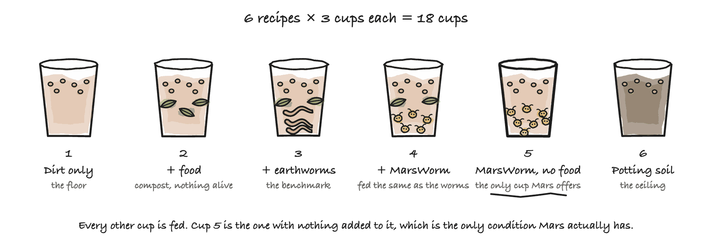

Stage 6: Testing MarsWorm in Dirt
Does MarsWorm actually turn Martian dirt into soil?
Every stage before this one was building towards a single afternoon: put MarsWorm into Martian dirt, plant a seed, and come back in three weeks.
It has not been run, and it cannot be until somebody builds MarsWorm. Everything else is finished and waiting: the sheets, the analysis, the report, and four rehearsals on invented numbers. The apparatus is ready before the organism is, and that is deliberate. An analysis written after seeing the data can be steered. One written before it cannot.
The dirt is MGS-1, a Martian regolith simulant sold by the bag. Nobody has dirt from Mars itself.
Where this sits in the project
| Stage | What it answers | |
|---|---|---|
| Stage 1 | Searching Earth for MarsWorm | Is there already an organism that can do this? |
| Stage 2 | Designing MarsWorm | Nothing can, so borrow 37 real genes and design one |
| Stage 3 | Testing Biology Enriches Dirt | Can life from Earth turn Martian dirt into soil at all? |
| Stage 4 | Testing Genes Enable Survival | Does a gene really bring its ability with it? |
| Stage 5 | Building MarsWorm | 24 genes into one host, in six tested rounds |
| Stage 6 | Testing MarsWorm in Dirt | Put it in Martian dirt and find out whether anything grows |
Stage 3 ran this same experiment with earthworms, to find out whether Martian dirt can be enriched by anything alive at all. Stage 6 runs it with MarsWorm, and keeps the earthworms in it, as the score MarsWorm has to beat.
Eighteen cups
Six recipes, three cups each, ten seeds in every cup. Only one recipe asks the real question. Each of the others takes away one rival explanation.

| What is in the cup | Why it is here | |
|---|---|---|
| 1 | MGS-1 dirt only | the floor: what Martian dirt gives you unaided |
| 2 | Dirt + food | is the compost doing the work, with or without anything alive? |
| 3 | Dirt + food + earthworms | the benchmark: what Stage 3 got out of Eisenia fetida |
| 4 | Dirt + food + MarsWorm | fed the same as the worms, does MarsWorm do better? |
| 5 | Dirt + MarsWorm, nothing else | the crux: MarsWorm with nothing to eat |
| 6 | Ordinary potting soil | the ceiling: real Earth soil, for scale |
Group 5 is why MarsWorm was designed at all. Every other way of enriching dirt starts by adding something that was once alive: compost, leaves, scraps. Mars has none of that. MarsWorm is built to make its own food from the carbon dioxide in the air, and its own fertiliser from the nitrogen in it, using 15 of its 37 genes. Group 5 is the only recipe here that could be run on Mars.
If group 5 fails and group 4 succeeds, MarsWorm has to be fed like an earthworm. That makes it an expensive way to have one.
Two numbers, answering different questions
A seedling growing is not the same as soil being made. Two things are measured, and neither is allowed to stand in for the other.
Dried seedlings on day 21. Did the seeds in that cup grow? Cut the sprouts, dry them, and weigh what came out of each cup to 0.01 g. This is the headline number, and it decides the winner.
Nitrate in the dirt, every week. Is MarsWorm making fertiliser? This is the one measurement an earthworm cannot match. An earthworm moves nitrogen from the food into the dirt. It cannot make any. Group 5 holds nothing but dirt and MarsWorm, so if nitrate climbs there, it came out of the air.
The two can come apart. Nitrate can climb while the seedlings still fail, which would mean MarsWorm is doing its half and something else in the cup is wrong. So the report gives each measurement its own verdict.
The full protocol, what gets written down and when
The five sheets
| The sheet | What goes in it |
|---|---|
build_log.csv |
One row per Stage 5 round: did it pass, did the colonies glow, did the DNA check confirm the cassette. Filled in before a single cup is planted |
containers.csv |
Which recipe is in each of the 18 cups, and where it sits on the shelf |
weekly_measurements.csv |
Once a week for four weeks: nitrate, crumbs left on the sieve, and pH |
plant_measurements.csv |
Every few days after sowing: how many of the ten seeds are up, and how tall |
harvest.csv |
Day 21. The sprouts from each cup, cut, dried and weighed to 0.01 g |
Weeks 1 to 4, the dirt
All 18 cups sit side by side in the shuffled
bench_position order from containers.csv,
never grouped by recipe. Each week, every cup gives up a scoop for three
readings: nitrate from an aquarium strip,
crumbs left on a 2 mm sieve after drying a 10 g scoop,
and pH from a test strip. Tip each scoop back into its
own cup afterwards.
Weeks 4 to 7, the plants
Sow ten seeds of the same species from the same packet in every cup. Count the sprouts and measure their height every two or three days. On day 21, cut the sprouts at soil level, dry them, and weigh what came out of each cup.
Rules that keep it fair
| The rule | What goes wrong without it |
|---|---|
| The build log is filled in first | a half-built MarsWorm gets reported as if it were the real one |
| Cups laid out in the shuffled order, never grouped by recipe | one recipe quietly gets the brightest, warmest end of the shelf |
| Same seed packet for every group | seed batches germinate differently, so the seeds could win instead of the dirt |
| Every measurement taken the same day for all 18 cups | a cup measured three days later has had three more days to grow |
| Three cups per recipe, and always report all three | an average hides the one cup that disagrees |
Leave a cell blank if you did not measure it, and
never type 0 |
the analysis treats a zero as a real measurement of nothing |
Write down only what you can read off an instrument. A weight, a number on a strip, a count of sprouts. Every column is explained in the codebook.
Nothing is planted until the build is finished
All of this assumes there is a MarsWorm to put in the cups. There might not be. Stage 5 builds it in six rounds, adding genes to Azotobacter vinelandii a few at a time, and round 3 is a genuine bet: nobody has ever made that bacterium breathe perchlorate and give off oxygen. Any of the six rounds can fail.
So which rounds succeeded goes into build_log.csv
before any cup is filled. The analysis refuses to report a
growth trial run with a strain that is missing rounds. Planting
a half-built MarsWorm is not a weaker version of this experiment. It is
a different one, and reporting it as this one would be a lie.
What we expect to see
Two cups carry the whole answer.
MarsWorm fed the same compost as the earthworms (group 4) should grow heavier seedlings than the earthworms themselves (group 3). That says MarsWorm does an earthworm’s job better than an earthworm.
MarsWorm given no compost at all (group 5) should still grow something. That is the only one that matters on Mars, where there is no compost to add. Nitrate is read in that cup every week too. An earthworm can move nitrogen out of food and into dirt but cannot make any, so nitrate rising in a cup that was given no food means the nitrogen came out of the air.
All of it written down before any weighing, so that no rule could be picked afterwards to make the answer look good.
| Group | What is in the cup | What we expect |
|---|---|---|
| 1 | Martian dirt, nothing else | almost nothing grows: this is the floor |
| 2 | Martian dirt + compost | a little growth, from the compost alone |
| 3 | Martian dirt + compost + earthworms | more than compost alone: what a worm adds |
| 4 | Martian dirt + compost + MarsWorm | more than the earthworms, by at least 0.10 g |
| 5 | Martian dirt + MarsWorm, no compost | some seedlings grow, and nitrate climbs |
| 6 | Ordinary potting soil | the most of any cup: real Earth soil, for scale |
How a winner is decided
The cups are planted and 21 days pass. The MarsWorm cups look heavier. Did MarsWorm win?
The three cups of one recipe never weigh the same. One sits in better light. One seed happens to be a good one. So a recipe does not win by having the biggest average of its three, because an average hides the cups that disagree with it.
The rule is the one Stages 3 and 4 use, written down before any data existed.
| The rule | The question it asks |
|---|---|
| A clean win. The worst MarsWorm cup still beat the best earthworm cup | was it every cup, or one lucky one? |
| Big enough. The gap is at least 0.10 g, about one seedling | was the difference big enough to matter? |
Read plainly: the unluckiest MarsWorm cup still grew more than the luckiest earthworm cup. That is hard to happen by accident, and anyone can check it on the chart with no arithmetic at all. When the two sets of three cups overlap, the report prints the honest answer instead: “with three cups each we cannot tell these apart.”
Practice runs on made-up data
The real experiment needs an organism nobody has built, and then months of growing. Data that expensive should not be the first thing this analysis has ever seen. So it has already been run against four invented outcomes, including the three where MarsWorm disappoints.
| Practice run | What it pretends happened |
|---|---|
marsworm-works |
MarsWorm beats the earthworms, and grows seedlings in group 5 with nothing to eat |
no-better-than-worms |
MarsWorm enriches the dirt, but no better than the earthworms already did |
fertiliser-but-no-food |
Nitrate climbs, so MarsWorm is fixing nitrogen, but no seedlings come up. The likeliest real outcome |
build-failed-at-round-3 |
Round 3 failed in Stage 5, so there was never a MarsWorm to plant |
Each run states in advance which verdicts it should produce, and the simulator checks that the analysis reaches them. Without that check a scenario can quietly stop testing anything: widen the cup-to-cup spread and every comparison turns into “cannot tell”, every report still builds, and nothing complains.
What counts as success
Group 4 grows heavier seedlings than group 3 by a gap that clears both rules, and group 5 grows anything at all. The first half says MarsWorm beats an earthworm when both are fed. The second says it does not need feeding, which is the only half that matters on Mars.
A failure is still a result. If group 4 matches group 3, MarsWorm is an expensive earthworm. If nitrate climbs and nothing grows, the design works and something else in the cup is wrong. The report prints either without being asked twice.